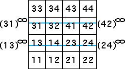
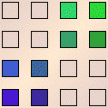
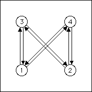
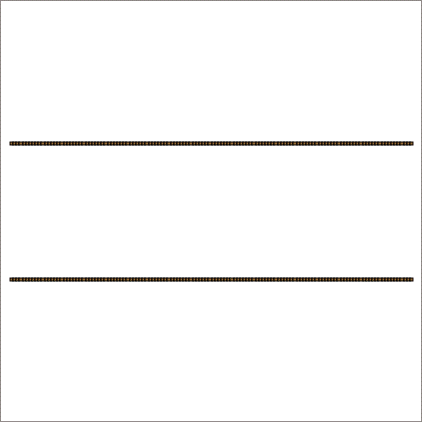

| Suppose we try to build horizontal lines between the 2-cycle points
(13)∞ and (31)∞
on the left side of the square, and (24)∞
and (42)∞ on the right side of the square. |
|  |
|
| Looking at the length 2 address squares through which the blue lines pass, we see these
transitions must be allowed. |
| 3 → 1, 4 → 1, 3 → 2,
4 → 2, 1 → 3, 2 → 3,
1 → 4, and 2 → 4 |
|
| On the left we see the corresponding table, in the center the graph.
Do these give the horizontal lines connecting the cycle points? Yes, they do. |
|  |
 |
 |
|
 |
|
|
| We call these lines generated by 2-cycles. |
| Exercise Do the same construction and analysis for a pair of vertical lines. |
| Test your ideas with the software before
looking at the answer. |
| Exercise Can these lines between 2-cycles be generated independently of one another?
Think before looking at the answer. |